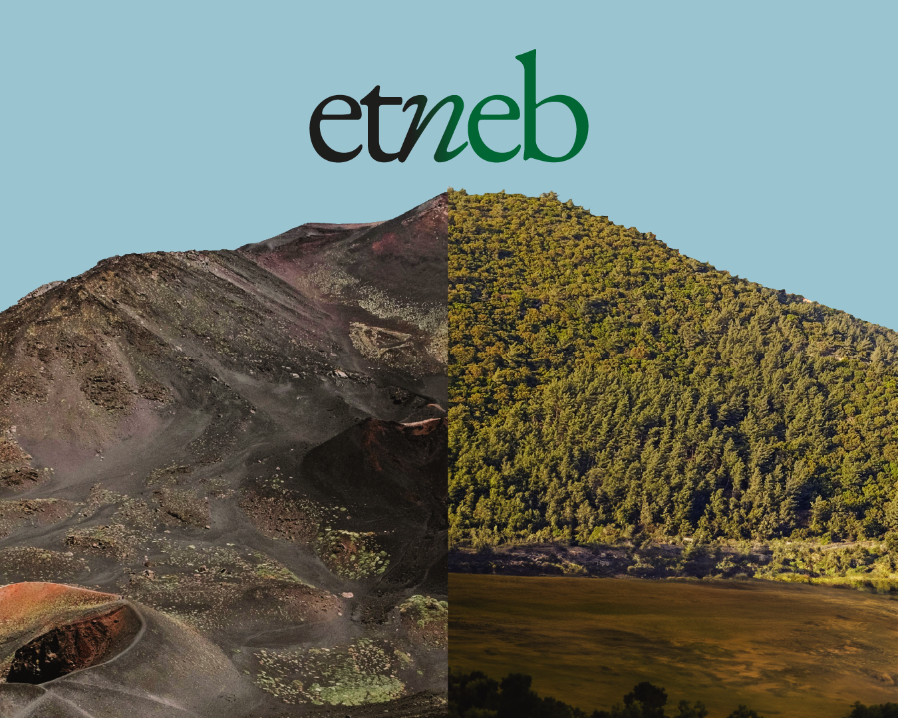
Portfolio
Progetti

Branding · Editoria · Web design
Fishtuna festival

Campagna di comunicazione
Rifiuta i luoghi comuni

Branding · Web design
Una Manciata di Sicilia
Branding · Editoria · Web Design
Etneb
Collaborazione con TempoReale
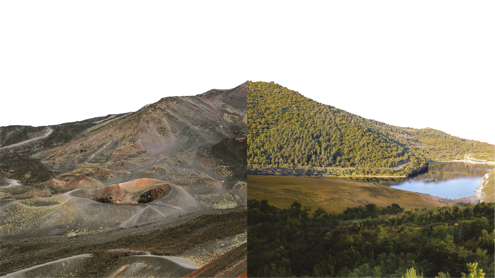
Overview
Una manifestazione diffusa che celebra il patrimonio culturale, paesaggistico ed enogastronomico dei territori dell’Etna e dei Nebrodi.
Obiettivo
Per la manifestazione mi sono occupato di realizzare il logo, la brand identity e la creatività dei mezzi offline. L'obiettivo principale era realizzare un'identità visiva che riuscisse a esprimere appieno entrambi i territori dell'Etna e dei Nebrodi.
Gallery
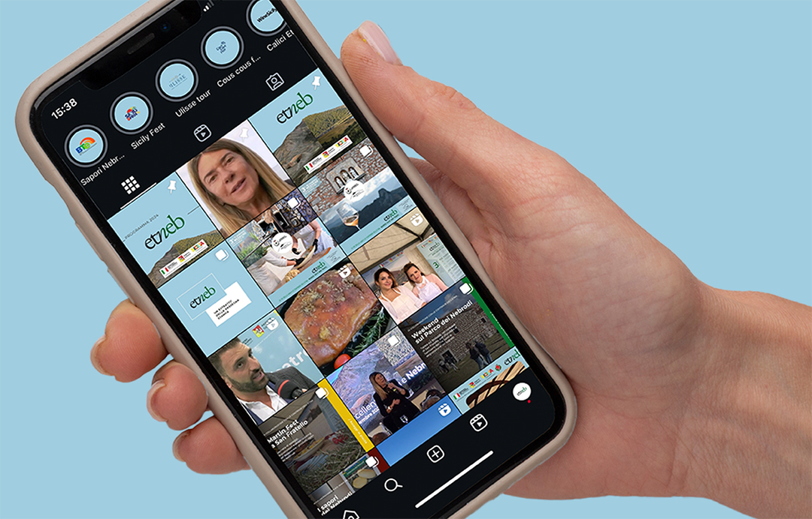
Ruolo
Graphic designer · web designer
Ho realizzato:
Brand identity, materiale di stampa, creatività per affissioni, creatività per il web.
Branding · Editoria · Web Design
Fishtuna festival 2023
Collaborazione con TempoReale
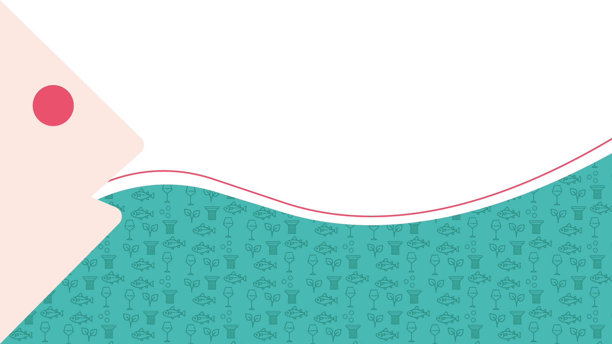
Overview
Un evento culturale ed enogastronomico che celebra il profondo legame tra territorio, mare e tradizione e verte su Arte, Turismo, Agroalimentazione e Sostenibilità. La quarta edizione del festival Fishtuna, a Favignana e Marsala, si colora con toni vibranti e giocosi.
Obiettivo
Creare una nuova identità visiva per la quarta edizione del festival, attraverso l'uso di colori brillanti e forme giocose per rappresentare la "grande festa" che è Fishtuna.
Gallery
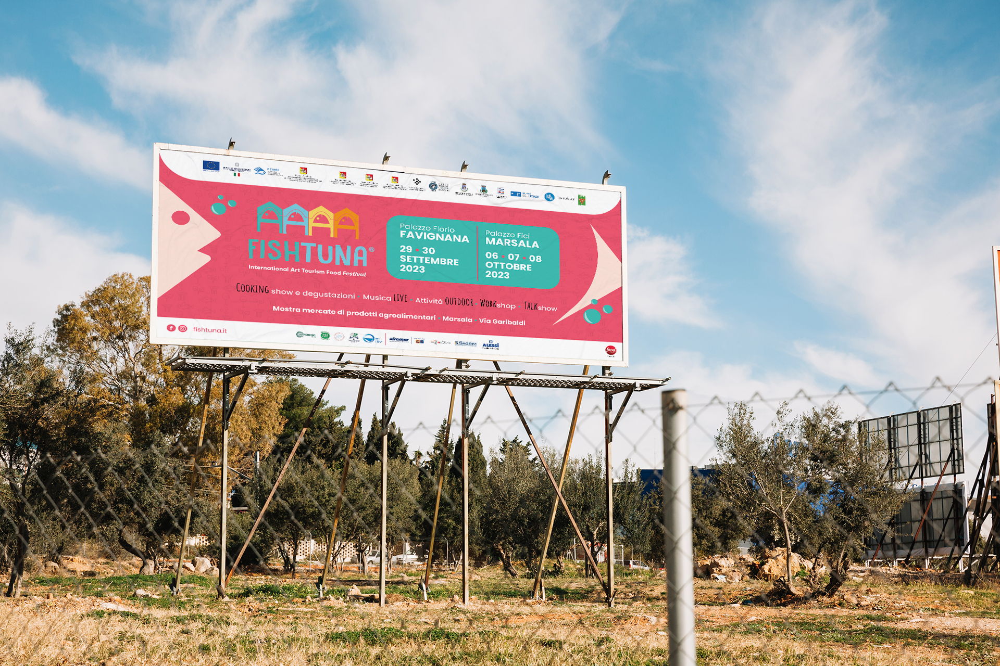
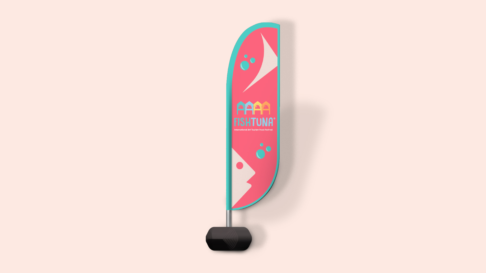
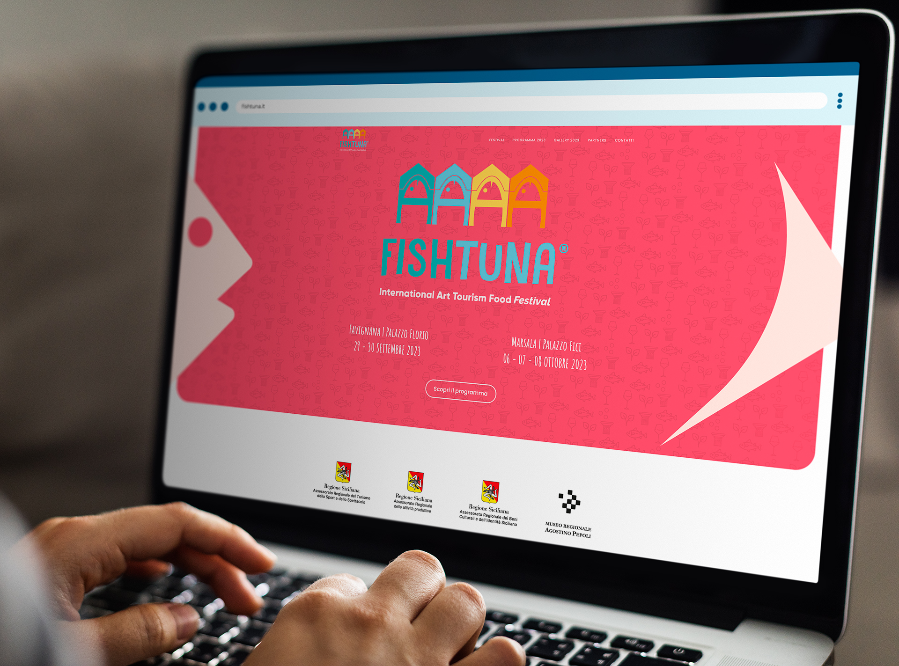
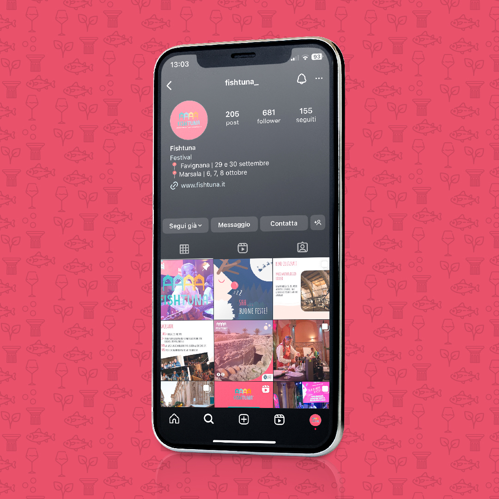
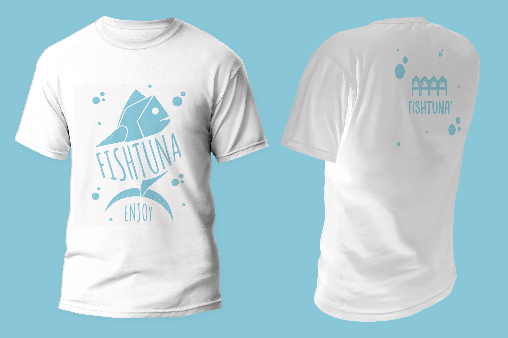
Ruolo
Graphic designer · Web designer
Ho realizzato:
Brand identity, materiale di stampa, creatività per affissioni, creatività per il web.
Campagna di comunicazione · Editoria
Campagna "Rifiuta i luoghi comuni"
Collaborazione con TempoReale
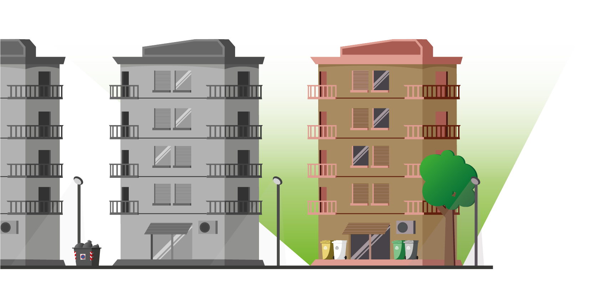
Overview
Una campagna di sensibilizzazione che punta a modificare la percezione pubblica dei rifiuti e della differenziata, affrontando direttamente le convinzioni errate più diffuse tra i cittadini.
Obiettivo
Utilizzare l'identità visiva già affermata della società per definire una campagna di comunicazione che verte sulla tipografia e il copywriting.
Gallery
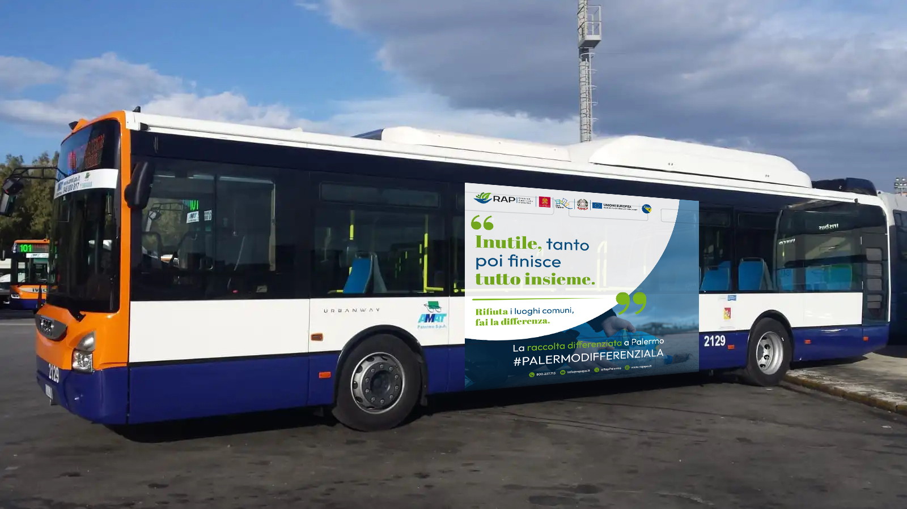
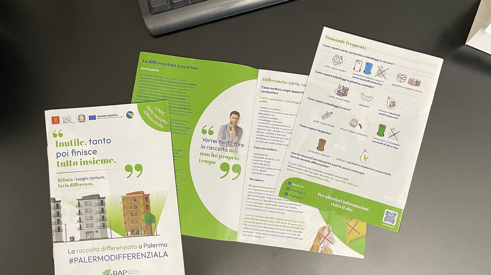
Ruolo
Concept designer · Graphic designer
Ho realizzato:
Materiale di stampa, creatività per affissioni, creatività per il web.
Branding · Web Design
Una Manciata di Sicilia
Collaborazione con TempoReale
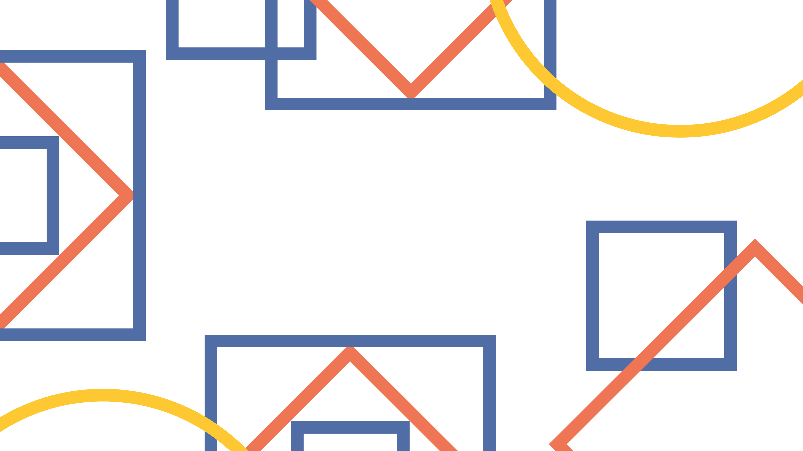
Overview
Un format crossmediale che punta a valorizzare la Sicilia come destinazione culturale ed enogastronomica, attraverso una narrazione contemporanea e accessibile. Come programma tv, Una Manciata di Sicilia porta gli spettatori all'interno delle città siciliane, mostra i suoi prodotti tipici e come questi vengono adoperati direttamente dalle famiglie locali.
Obiettivo
Progettare l'identità visiva del format, declinato nei suoi diversi media, tramite elementi tipici della Sicilia come le ceramiche e palette di colori associate a tali elementi.
Gallery
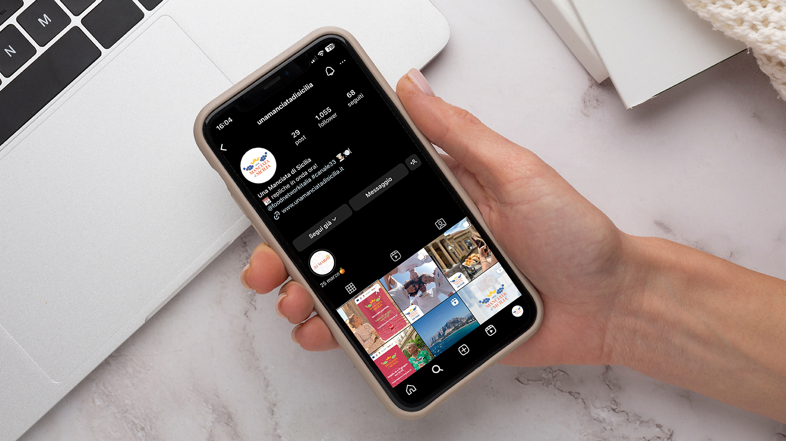

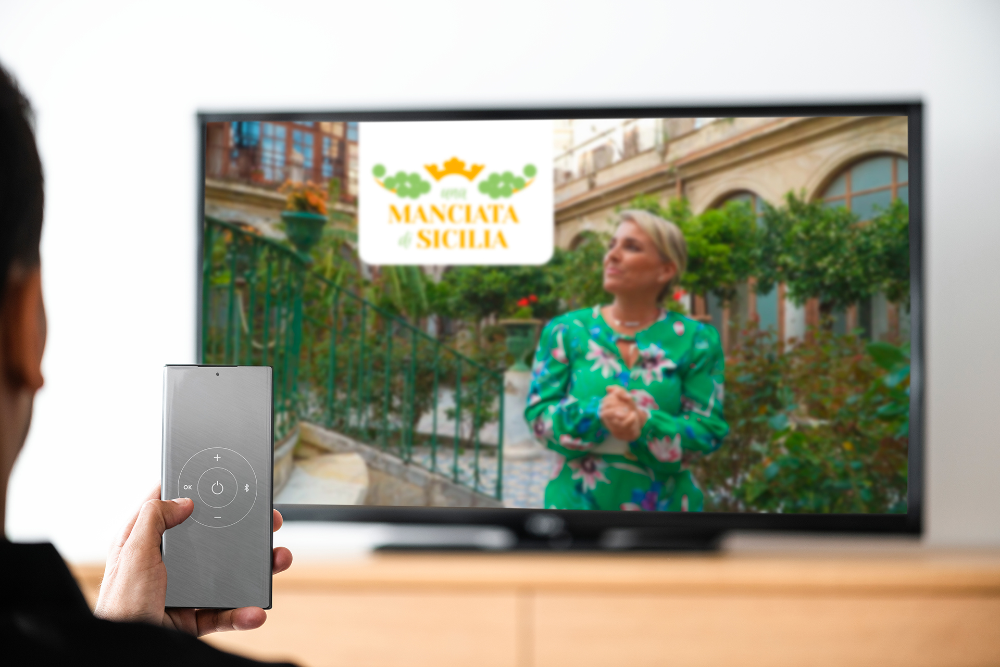
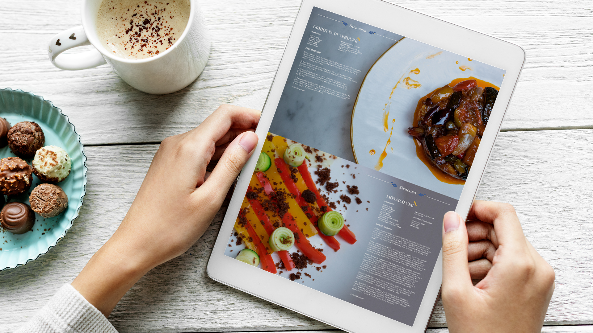
Ruolo
Graphic designer · Web designer
Ho realizzato:
Brand identity, creatività per il web e altri media.